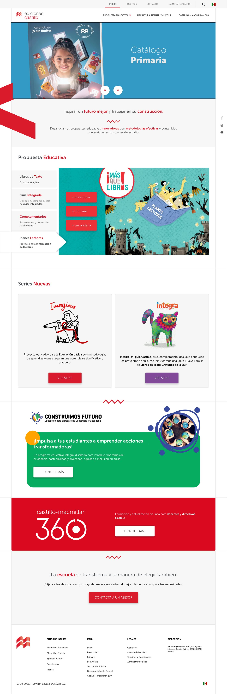
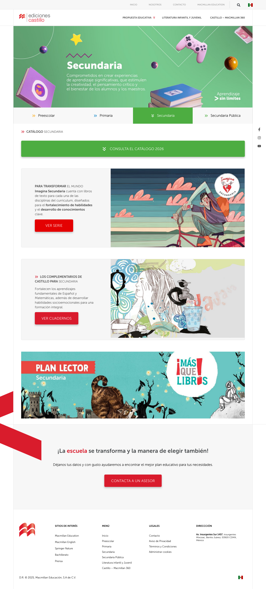
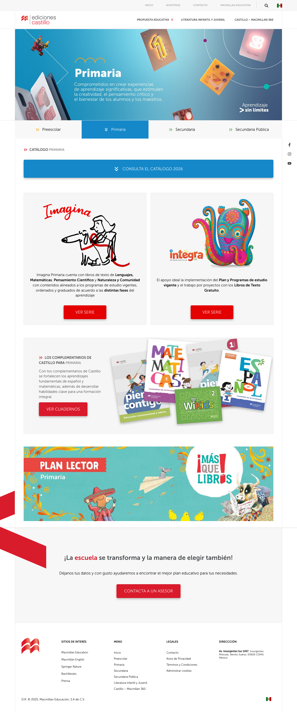

"Arquitectura de contenido, diseño y desarrollo completo para Ediciones Castillo — parte de la red global de Macmillan Education."
Ediciones Castillo, parte de la red global de Macmillan Education, necesitaba una plataforma digital que reflejara la profundidad y diversidad de su catálogo educativo para México: materiales para preescolar, primaria y secundaria, desarrollo profesional docente, propuestas curriculares y una plataforma de educación continua en línea. Un proyecto de arquitectura de contenido compleja, diseño funcional y desarrollo robusto.
Ediciones Castillo no tiene un solo público — tiene varios: docentes que buscan materiales pedagógicos por nivel y asignatura, directores escolares evaluando propuestas curriculares, padres de familia explorando lecturas complementarias, y profesionales de educación inscritos en programas de desarrollo continuo.
Cada audiencia necesita un recorrido distinto dentro del mismo sitio. La arquitectura de contenido tenía que resolver esa complejidad de forma intuitiva, sin fricciones y alineada a los estándares visuales de la red global Macmillan.
Diseñamos la arquitectura completa del sitio: jerarquía de navegación por nivel educativo y tipo de producto, páginas de propuesta curricular, sección de lecturas complementarias y un hub de desarrollo profesional docente — Castillo-Macmillan 360 — con acceso a webinars, conferencias y materiales de formación continua.
El diseño respeta la identidad global de Macmillan Education mientras adapta el tono y la estética al contexto mexicano. El desarrollo integra registro de usuarios, sistema de newsletter, gestión de eventos educativos y puntos de contacto para asesores comerciales en cada nivel del sitio.
Pasa el cursor sobre cada pantalla para recorrerla.


